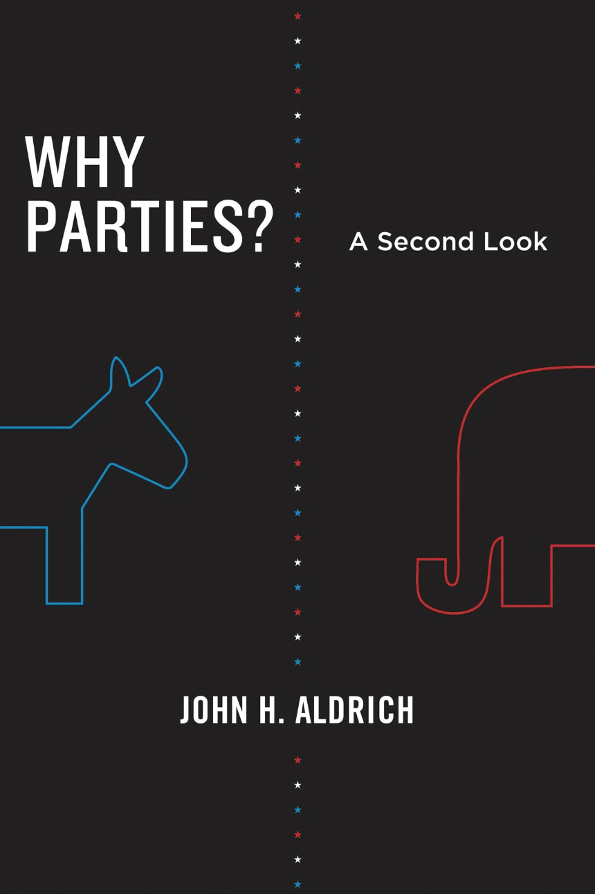
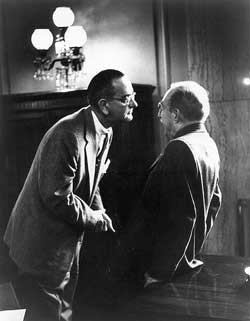
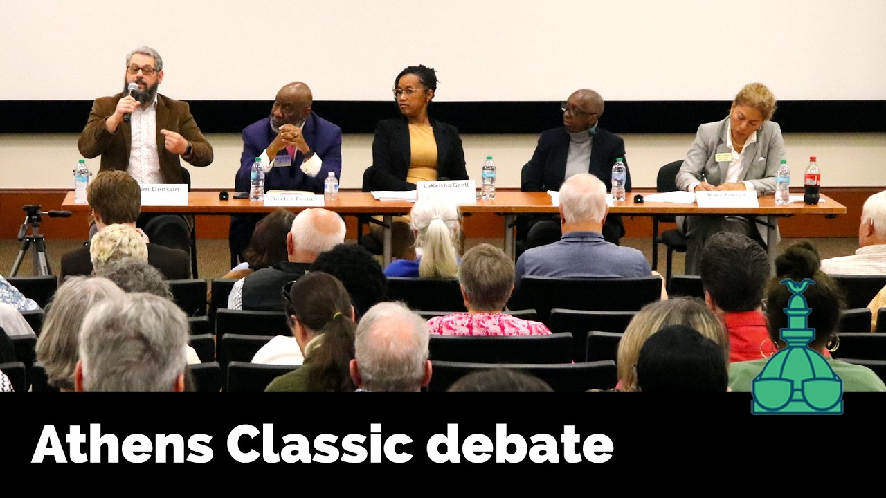

Local Elections
POLS 4641: The Science of Cities
Today’s Agenda
What are political parties good for?
Why do we not see party competition at the local level?
How do voters in local elections deal with the fact that there are no party labels on the ballot?
Why Parties?
Why do we see political parties spring up in virtually every electoral democracy?
Parties solve three fundamental problems (Aldrich 1995):
- Regulating candidate entry
- Mobilizing voters
- Organizing legislative majorities

Parties Regulate Candidate Entry
In a first-past-the-post system, you don’t want multiple “clone” candidates running for the same office.
Candidates with similar platforms just sap support from each other.
Whichever side consolidates around a single candidate stands the best chance of winning.
Parties solve the problem nicely by regulating who can run for office on their ticket.
These forces tend to yield two major political parties (Downs 1957).
Parties Mobilize Voters
Why bother voting at all? (Downs 1957)
The chance that your single vote decides an election is vanishingly small; there’s a nonzero cost to researching candidates and turning out.
Voting itself is yet another collective action problem: your individual incentive is to stay home and let other people put in the work.
Parties help solve this in two ways:
- Organizational mobilization — party networks knock on doors, make calls, and apply social pressure to turn out supporters.
- Informational shortcuts — the party label allows voters quickly infer a candidate’s positions without researching every race (Lupia and McCubbins 1998); makes voting less informationally costly.
Parties Organize Legislative Majorities
Once you’re in office, how do you get the bills you want passed through the legislature?
- Each legislator represents a district with its own interests.
- No individual has reason to support another district’s priorities
- A fundamental collective action problem: everyone free-rides and nothing passes
- Parties solve this problem by “whipping votes” – applying carrots (committee assignments, fundraising support) and sticks (primary challenges) to enforce party discipline.

Why No Parties At The Local Level?
Geographic Sorting: As we discussed in Week 3, many communities are overwhelmingly dominated by voters from one of the major national parties.
Nonpartisan Ballots: The majority of local elections are formally nonpartisan, a legacy of Progressive Era reforms (Schaffner, Streb, and Wright 2001).
Unitary Party Rules: Even in cities with partisan ballots, election law make it impossible for purely local parties to form with distinct brands from the national parties (Schleicher 2007).
Unregulated Candidate Entry

Demobilized Voters

Poorly-Informed Voters
- Without party labels, how do voters make informed decisions about candidates?
In practice, they rely on other informational shortcuts:
Interest group endorsements (Lupia 1994; Hartney and Kogan 2025; Gaudette 2025)
Incumbency (Schaffner, Streb, and Wright 2001; Benedictis-Kessner 2018)
Race and gender (Kirkland and Coppock 2018)
Business experience (Kirkland 2021)
Homeownership and other cues about “community embeddedness” (Ornstein et al. 2024)
Disorganized Legislatures
In the US Congress and most state legislatures, it’s easy to predict how a given legislator will vote, if you know their party.
In city councils, school boards, and other local legislative bodies, coalitions are unstable, and it’s difficult to predict how a given member will vote (Bucchianeri 2020).
Instead of party discipline, we get conventions like “aldermanic privilege”.
Councilmembers defer to a ward’s representative about legislation that would affect their district.
This makes it particularly difficult to push forward initiatives that would help the entire city, but have negative impacts locally (Schleicher 2013):
Building new housing
Expanding mass transportation
More on these sorts of policy issues over the next few weeks!
Next Time
- If no one is paying attention to local government, and parties aren’t organizing electoral competition, then how do we hold local politicians accountable for what they do in office?